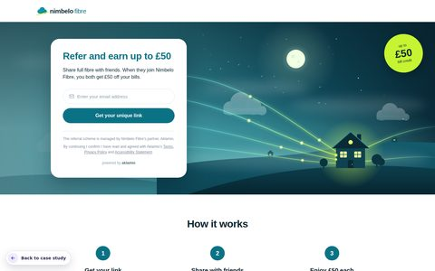
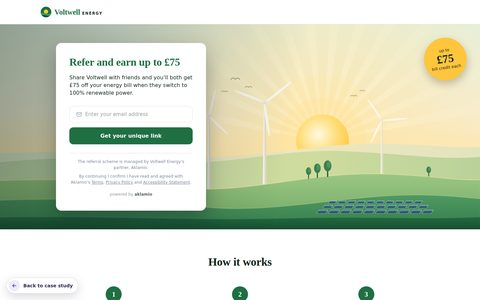
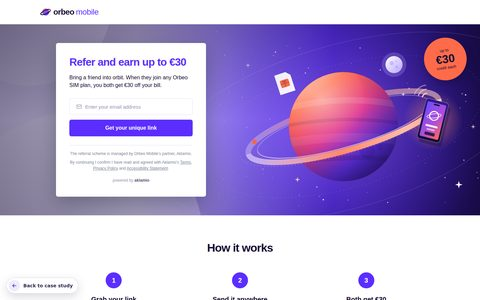
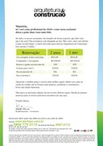
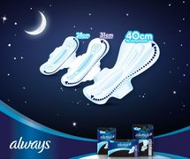
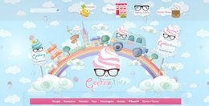

Web & UI designer, based in Berlin. I turn fuzzy briefs into interfaces people enjoy using — then build them myself.

NIMBELO FIBRE
VOLTWELL ENERGY
ORBEO MOBILEOne template, three fictional brand portals. Web & UI work, from Figma to a shared Contentful-driven template.
SEE CASE STUDY →


14 projects from earlier in my career, kept for the full story.
SEE ALL →Are you sure you want to
view this portfolio?
Go to a complete content model?